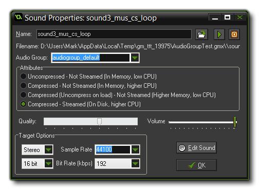

To add a sound resource to your game, use the Resource menu
or right-click on the resource tree and select Create Sound,
or you can use the corresponding button on the toolbar. Any of
those will bring up the following window:  To load a sound, press the Load
Sound button to the right of the sound name. A file selector
dialogue pops up in which you can select the sound file, which can
only be either a wave file or an MP3 file. In general, Wave
files (*.wav) are used for the short sound effects as even
though they are generally larger files they will play
instantaneously due to the fact that they do not need any type of
decoding for playing. You can also have multiple wave files playing
at once, which is why you should use these for all the sound
effects in your game.
MP3 (*.mp3) files should be used for background music as
GameMaker: Studio only permits you to play one music track
at a time. These files are much smaller than a wave file would be
but have a small CPU overhead as they have to be decoded before
being played, hence the limit of only one MP3 file being played at
time (however, you can have multiple music tracks in your game, and
you would just switch between them when necessary).
Once you have loaded your file you can preview the sound by using
the play button which will loop it continuously. This is very handy
as it means you can make changes to the volume using the slider at
the bottom of the window and hear what the effect it will have on
the sound. There is a stop button too, so you can stop the preview
at any time.
NOTE: Previous versions of GameMaker accepted MIDI file format but that is not the case with GameMaker: Studio. You cannot use MIDI any longer and any imported files from legacy versions which use these may cause the program to crash. These files should be removed or changed before testing!
The sound window also has other options which are explained
below.
You can assign your audio file to a specific Audio group. These are created from the Global Game Settings Audio Groups Tab and are used to to group audio assets together for easier memory management and volume control. Once an audio file has been assigned to a group you can then use the specific audio group functions to change them and lo load/unload them from memory. See the section on Audio Functions for further information. Note that while the rest of the audio properties are configuration specific, the audio group setting is not and a sound will belong to the same group on all configurations that you use.
NOTE: Audio groups can only be used when working with the normal audio system, but will not work with legacy audio.
The above rules for file types are for the default configuration
of Uncompressed audio. However, you can select to
Compressed audio should you wish to use that. What this will
do is force all your sound files (irrespective of whether they are
*.wav or *.mp3) to be compressed down to Ogg
Vorbis *.ogg format files for all platforms.
These sounds are smaller on disc, but will have a slight CPU
overhead due to the need to be uncompressed before being played, so
you should keep that in mind if you wish to use compression in an
already CPU intensive game.
If you have chosen compressed audio, you can then also
choose to have your sound as streamed or not
streamed. A streamed sound will be one that is uncompressed and
played in real time, streamed from the disc. Streaming is ideal for
music as it reduces the one off overhead of uncompressing the whole
file, which may cause a pause in the game, but is not recommended
for simple sound effects where the hit on the CPU is much less.
If you have loaded an *.ogg file or an *.mp3
file into the IDE, you will be presented with a "quality" slider.
Changing this will change the encoding that is used and therefore
reduce (or improve) the final quality of the sound. Note that the
better the quality, the larger the file, and that increasing this
on a low quality audio file will not improve the quality
noticeably and only bloat the final game. In general the default
value is fine for most games.
Beside the quality bar for all file types, you can set the maximum
volume for a sound, ie: if the slider is at 0.5 then the max volume
for that sound when the gain is 1, will be half the recorded volume
for the sound. Note that if you are using the legacy audio system
to play the sound (or are working on the HTML5 target), this slider
is simply the initial volume of the sound and can be changed
by setting the volume using the appropriate legacy function.
The Target Options panel is where you set the conversion
rates for your game. These settings will affect how the sound is
exported for the target platform, and GameMaker: Studio will
automatically convert your sound files for you - you simply control
the final quality of those sounds when converted. Generally the
default settings of 16 bit, 44100kHz and 192kbps are perfectly
adequate, but it may be that you wish sound effects (for example)
to have a lower quality and music to have a higher quality, in
which case these settings can be changed.
You can also choose whether the conversion should be mono, stereo
or 3D. If you plan on using the audio emitter functions to create
3D sound effects, you should indicate this here, otherwise choose
mono or stereo depending on the use that the sounds are going to be
put to.
NOTE: The higher the quality, the larger the file, and
this should be taken into account when deciding what bitrate to
choose.
GameMaker: Studio does not have a built-in sound editor.
But, in the Editor
Preferences, you can indicate external editors that you want to
use for editing sounds. If you selected these you can press the
button labelled Edit Sound to open the chosen editor and
change the current sound. The GameMaker: Studio window will
be hidden while you edit the sound and returns when you close the
sound editor (you must save the sound in the editor first otherwise
it will not be saved in GameMaker: Studio).